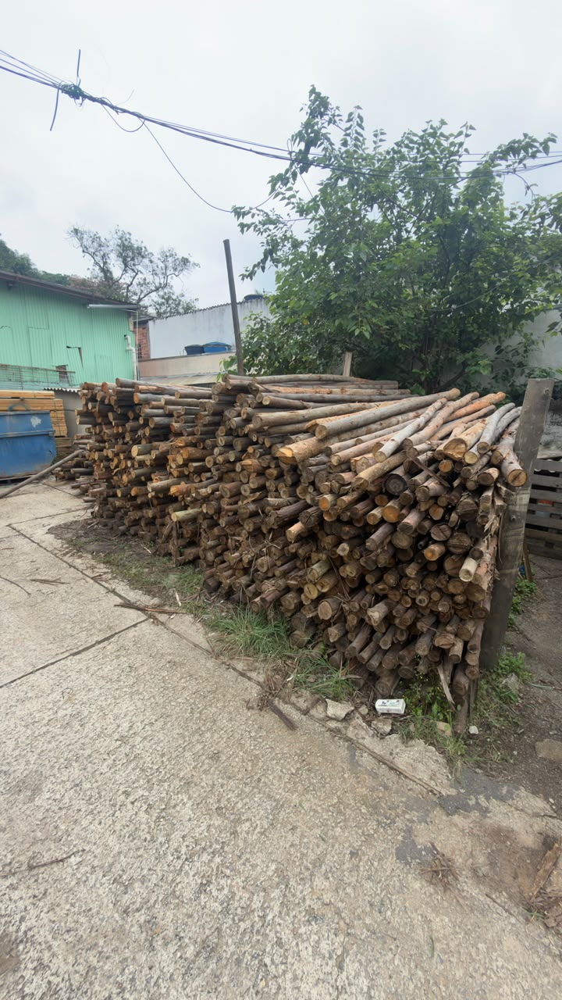
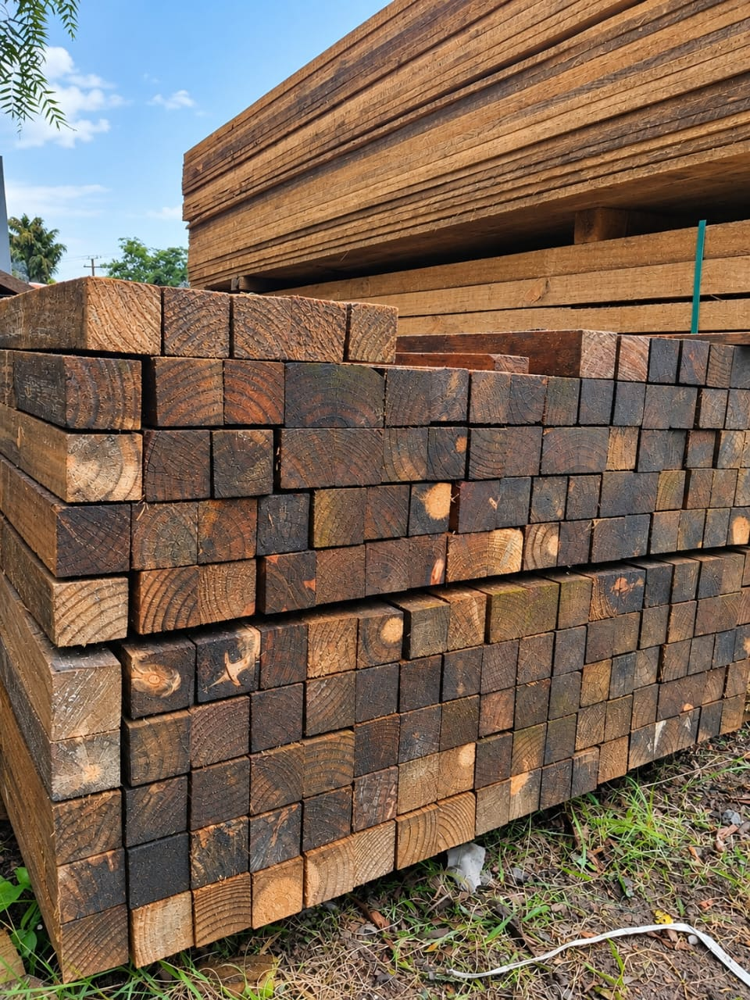
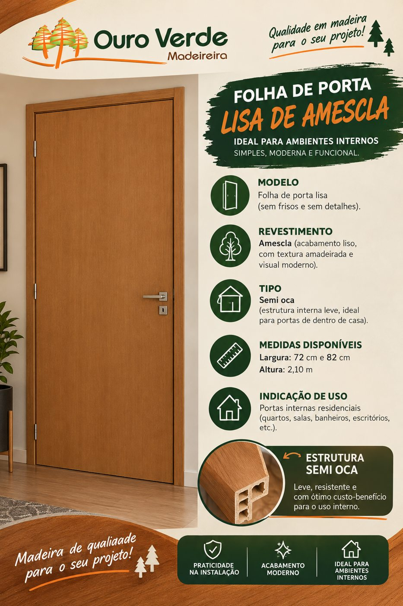

PontaletesPontaletes
Eucalipto
Estrutura e apoio à obra.
Pontaletes utilizados em escoramentos provisórios e serviços de apoio, conforme as especificações de cada projeto.
INFORMAÇÕES3 m / 4 m / 6 m
Ver medidas e produtoTem madeira em cada etapa da sua obra.
E tem a Ouro Verde em cada escolha.
.png)
Comece pelo produto.
A gente ajuda com o próximo passo.
EXPLORE POR CATEGORIA

PontaletesEstrutura e apoio à obra.
Pontaletes utilizados em escoramentos provisórios e serviços de apoio, conforme as especificações de cada projeto.

PontaletesTrês bitolas. Uma escolha para a sua obra.
Confira os pontaletes de pinus com 3 metros de comprimento e as opções de bitola disponíveis.

AcabamentoO acabamento também faz parte da obra.
Texturas de madeira e diferentes modelos para compor o seu ambiente. Converse com a equipe sobre as opções disponíveis.
EstruturaDa estrutura ao seu projeto.
Fale com nossa equipe sobre vigamentos e caibros. Envie as medidas do seu projeto para consultar as opções.
Construção e marcenariaMadeira para seguir construindo.
Conte para a nossa equipe o que você precisa para sua construção, reforma ou trabalho de marcenaria.
Uma história construída no atendimento. E na confiança de quem constrói com a gente.
A Ouro Verde nasceu em Arujá, São Paulo, em dezembro de 1998. Desde então, acompanha projetos de construção, reforma e marcenaria, da estrutura ao acabamento.
Portas, pontaletes, vigamentos, caibros e outros produtos: nossa equipe está aqui para ouvir o que você precisa e ajudar nas escolhas para cada etapa do seu projeto.
Valorizamos a procedência responsável dos nossos produtos, o respeito aos recursos naturais e uma construção mais consciente. Consulte nossa equipe sobre a origem e a documentação dos produtos.
Escolha o canal e fale com a equipe.
Sem complicação.
Mande sua lista de materiais ou conte o que está planejando.
Conversar no WhatsAppConstruindo nossa história aqui
desde 1998.